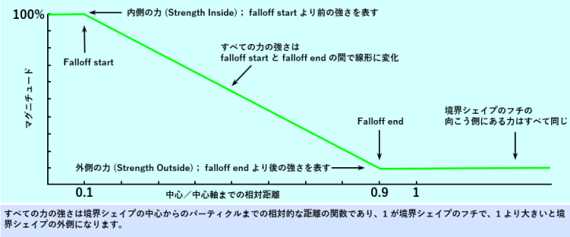
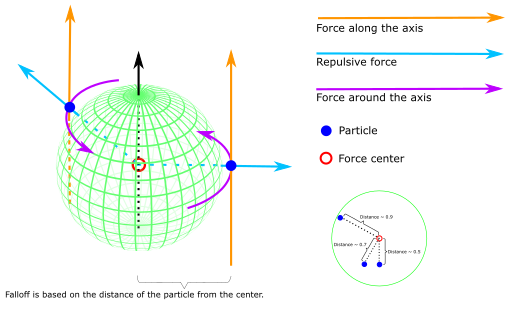
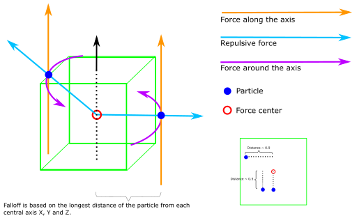
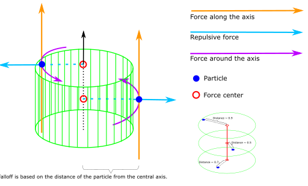
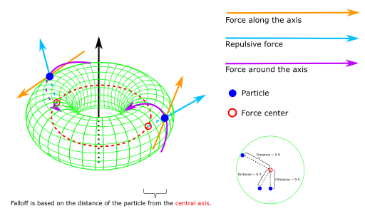
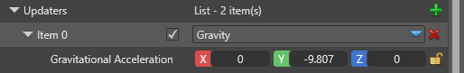

パーティクル アップデーター
中級 アーティスト プログラマー
パーティクルは、放出されてから消滅するまで時間をかけて変化していきます。アップデーター（updator） は、生きているすべてのパーティクルに時間の経過とともに作用し、位置、速度、色などの属性を変化させます。例えば、重力によってパーティクルの速度が一定の割合で更新され、地面に向かって加速していきます。
Stride にはいくつかのアップデーターが組み込まれています。カスタムパーティクルサンプルでは、エンジンにアップデーターを追加する方法について紹介しています。
共通プロパティ
いくつかのプロパティは、多くのアップデーターに共通しています。

| プロパティ | 説明 |
|---|---|
| Debug draw | デバッグ用に、アップデーターの境界を示すワイヤーフレームを描画します。これはシーンエディターでのみ表示され、実行時には表示されません。 |
| Position inheritance | パーティクルシステムコンポーネントの位置を継承します。具体的には、パーティクルエンティティの Transform コンポーネントの Position プロパティを継承します。 |
| Position offset | 追加のモジュール移動。親の位置を継承している場合は、継承した位置の上に適用されます。 |
| Rotation inheritance | パーティクルシステムコンポーネントの回転を継承します。具体的には、パーティクルエンティティの Transform コンポーネントの Rotaion プロパティを継承します。 |
| Rotation offset | 追加のモジュール回転。親の回転を継承している場合は、継承した回転の上に適用されます。 |
| Scale inheritance | パーティクルシステムコンポーネントの均等スケールを継承します。具体的には、パーティクルエンティティの Transform コンポーネントの Scale プロパティを継承します。 |
| Scale offset | 追加のモジュールスケーリング。親のスケーリングを継承している場合は、継承したスケールの上に適用されます。 |
コライダー（Collider）

コライダー（collider; 衝突器） は、あらかじめ定義した形状に衝突したときに、パーティクルの位置と速度を変化させるアップデータです。

| プロパティ | 説明 |
|---|---|
| Shape | コライダーの形状（球体（Sphere）、円柱（Cylinder）、箱（Box）、円環体（Torus）のいずれか）。 |
| Is hollow | 無効の場合、コライダーは固体であり、パーティクルはそれに跳ね返ります。有効にすると、コライダーは中空になり、パーティクルはコンテナの中に閉じ込められたかのように、コライダーの内部に留まります。 |
| Kill particles | 有効にすると、パーティクルは、コライダーに衝突したときに直ちに殺されます。 |
| Restitution | 反発係数は、パーティクルが、衝突前の速度と比較して衝突後に維持できる速度の割合ことです。アップデーターでは、反発係数を速度の垂直方向成分のみに適用します。水平方向の速度成分には影響を与えません。 |
| Friction | 摩擦係数は、パーティクルがコライダーに衝突した際に失う、水平方向の速度の割合です。水平方向の速度成分にのみ影響し、垂直方向の速度成分には影響を与えません（パーティクルが跳ね返る高さは変わりません）。 |
力場（Force field）

力場（force field） は、境界シェイプといくつかの力ベクトルで定義されます。力ベクトルは、境界シェイプへの相対位置に基づいてパーティクルに作用します。

| プロパティ | 説明 |
|---|---|
| Shape | 境界シェイプの種類（球体（sphere）、円筒（sylinder）、箱（box）、円環体（torus）のいずれか）。 |
| Falloff | 減衰（falloff）は、パーティクルにかかる力の強さを決めるシンプルな線形関数です。これは、中心からパーティクルまでの距離に基づきます。内側の力（strength inside）とは、パーティクルが中心からFalloff start 以内にあるときに適用される力の大きさのことです。外側の力（strength outside）とは、パーティクルが中心から Falloff end 以上離れているときに適用される力の大きさのことです。どちらの値も境界シェイプのサイズを基準にしており、Falloff start と Falloff end の間では、内外 2 つの力が線形に補間されます。中心地点での力を 0 にすることも可能で、その場合は境界シェイプの外側でのみ力が作用します。 |
| Energy conservation | 運動量保存（energy conservation）の値は、パーティクルに保存されるエネルギーの割合です。保存されたエネルギーはパーティクルの速度として格納され、結果として速度が徐々に増加します。保存されないエネルギーは、パーティクルの位置に直接適用され、力が消滅すると失われます。 |
| Directed force | パーティクルを力場の中心軸に沿って（通常は上向きに）移動させる力。 |
| Vortex force | パーティクルを力場の中心軸を中心にして回転させる力。右手回りの法則が用いられます。 |
| Repulsive force | 反発力（repulsive force）は、パーティクルを力場の中心から遠ざける（負の場合は中心に向かって移動させる）力の強さです。 |
| Fixed force | 非回転・非スケーリングの固定軸に沿ってパーティクルを移動させる力です。 |
減衰（Falloff）
減衰（falloff） とは、境界シェイプの中心からの距離に応じてパーティクルへの力の強さを変化させることです。減衰は相対的な距離の関数であり、距離が 0 であれば境界シェイプの中心、1 であれば境界シェイプのふち、1 以上であれば境界シェイプの外側にいることを意味します。
減衰開始距離（falloff start）よりも近いパーティクルは、常に内側の力（strength inside）の影響を受けます。減衰終了距離（falloff end）よりも遠いパーティクルは、常に外側の力（strength outside）の影響を受けます。
その中間にあるパーティクルへの影響は、直線的に変化します。

例えば、境界シェイプが半径 10 m の球体である場合、中心から 1 m 以内のパーティクル（0.1 × 10 m）は最大の力で移動します。1 m を過ぎると力は直線的に減少し、9 m の距離（0.9 × 10 m）でゼロになります。それ以降は、力はパーティクルに影響を与えません。
境界シェイプ（Bounding shapes）
球（Sphere）

画像ライセンス：CC-BY-SA 4.0, 球体画像は "Sphere wireframe" work の Geek3 氏によるもの（CC-BY-SA 3.0 ライセンス）。
{kind=link}
境界シェイプが球体の場合は、減衰（falloff）距離は球体の中心からパーティクルの半径方向の距離に基づきます。球体が楕円体にスケーリングされた場合、この距離もスケーリングされます。この距離は半径に対して相対的であり、1.0 が球体の表面を表します。
指向性力（directed force）ベクトルは、球体のローカル Y 軸に対して平行です。反発力（repulsive force）ベクトルは、中心からパーティクルへ向けられます。渦力（vortex force）ベクトルは、パーティクルの位置で球体の Y 軸の周りを回ります（右手回りの法則に従います）。
箱（Box）

境界シェイプが箱の場合は、X、Y、Z 軸方向の 3 つの距離のうち最も長い距離が減衰（falloff）距離になります。この距離は箱のサイズを基準として、1.0 が箱の表面を表します。
指向性力（directed force）ベクトルは、箱のローカル Y 軸に対して平行です。反発力（repulsive force）ベクトルは、中心からパーティクルへ向けられています。渦力（vortex force）ベクトルは、パーティクルの位置で箱の Y 軸を回ります（右手回りの法則に従います）。
円筒（Cylinder）

境界シェイプが円柱の場合は、減衰（falloff）距離は、円柱のローカル Y 軸からのパーティクルの半径方向の距離に基づきます。パーティクルの高さ（Y 軸上の位置）はパーティクルが円柱の外に出ていない限り無視されます（その場合、距離は常に 1 となります）。
指向性力（directed force）ベクトルは、円筒のローカル Y 軸に対して平行です。反発力（repulsive force）ベクトルは、円柱のローカル Y 軸から粒子へ向けられています（そのため、反発力ベクトルは常に水平になります）。渦力（vortex force）ベクトルは、パーティクルの位置で円柱の Y 軸の周りを回ります（右手回りの法則に従います）。
円環体（Torus）

画像ライセンス：GFDL, CC-BY-SA 4.0, 円環体画像は "A simple Torus" work の Yassine Mrabet 氏によるもの（GFDL, CC-BY-SA 3.0 ライセンス）。
{kind=link}
境界シェイプが円環体の場合は、減衰（falloff）の性質が全く変わります。減衰距離は、円環体の内円（赤で示した回転軸）からパーティクルの半径方向の距離に基づいてパーティクルに最も近い円上の点までの距離を表します。
指向性力（directed force）ベクトルは、パーティクルに最も近い点で回転軸に接します。反発力（repulsive force）ベクトルは、軸からパーティクルへ向けられています。渦力（vortex force）ベクトルは、軸に対するパーティクルの相対位置に基づいて、指向性力ベクトルの周りを回ります（右手回りの法則に従います）。
計算は少し複雑ですが、トーラス力場を扱うのは簡単です。ぜひ試してみてください。
重力（Gravity）
重力（gravity）アップデーターは、位置に関係なくすべてのパーティクルに影響を与えるシンプルな力で、スケーリングも回転もしない一定の力ベクトルを持っています。これは編集可能なので、異なるスケールや動作のプロジェクトでも使用できます。

重力は、オフセットや継承などのほとんどのプロパティを無視し、以下のプロパティのみを使用します。
| プロパティ | 説明 |
|---|---|
| Gravitational acceleration | 影響を受けるすべてのパーティクルの加速度を定義する重力ベクトルです。既定値は地球上の平均重力です。 |
速度による方向修正（Direction from Speed）
速度による方向修正（Direction from Speed） は、ポストアップデーターです。つまり、ポストアップデーター以外のアップデーターの後に適用されます。これは、ポストアップデーター以外のアップデーターのほうが先にリストアップされていても同様です。
このアップデーターはプロパティを持たず、単に、パーティクルの速度（speed）に合わせてパーティクルの方向（direction）を更新します。速度（speed）は最後のフレームからのパーティクルの位置の差から計算し、パーティクルの速度（velocity）には依存しません。つまり、パーティクル自身の速度（velocity）が 0 で、外力によってのみ動かされている場合でも、速度による方向修正は行われます。
パーティクルの方向（direction）は正規化されたベクトルではなく、距離の差に合わせて大きさを変えます。このアップデーターは、イニシャライザーのように、Direction パラメータを上書きします。
色アニメーション（Color animation）
色アニメーション（color animation） は、ポストアップデーターです。つまり、ポストアップデーター以外のアップデーターの後に適用されます。これは、ポストアップデーター以外のアップデーターのほうが先にリストアップされていても同様です。
色アニメーションは、パーティクルの正規化されたライフタイム（0～1）にまたがる曲線をサンプリングして、パーティクルの Color フィールドを更新します。パーティクルの色が微妙に変化するような二次曲線を設定することもできます。色アニメーションは、初期色など設定済みの Color パラメータを上書きします。
曲線の値は 0 ～ 1 間で基準値を持つ RGBA に対応した Vector4 型です。1 を越える値は RGB のみに有効で（アルファは不可）、HDR レンダリングに使います。
回転アニメーション（Rotation animation）
回転アニメーション（rotation animation） は、ポストアップデーターです。つまり、ポストアップデーター以外のアップデーターの後に適用されます。これは、ポストアップデーター以外のアップデーターのほうが先にリストアップされていても同様です。 これは厳密には 1 軸の回転で、ビルボード型のパーティクルに使用されます。
回転アニメーションは、パーティクルの正規化されたライフタイム（0～1）にまたがる曲線をサンプリングして、パーティクルの Rotation フィールドを更新します。パーティクルの回転が微妙に変化するような二次曲線を設定することもできます。
回転アニメーションは、初期回転など設定済みの回転パラメータを上書きします。加算タイプのアニメーションが必要な場合は、シェイプビルダーがそれをサポートしているかどうか確認してください（シェイプビルダーのプロパティにあります）。加算タイプのアニメーションはパーティクルのフィールドには保存されず、ずっと使い続けることはできませんが、パーティクルがすでに持っているフィールドへ加算することができます。
サイズアニメーション（Size animation）
サイズアニメーション（size animation） は、ポストアップデーターです。つまり、ポストアップデーター以外のアップデーターの後に適用されます。これは、ポストアップデーター以外のアップデーターのほうが先にリストアップされていても同様です。
サイズは、厳密には均等なサイズです。サイズアニメーションは、パーティクルの正規化されたライフタイム（0～1）にまたがる曲線をサンプリングして、パーティクルの Size フィールドを更新します。パーティクルのサイズが微妙に変化するような二次曲線を設定することもできます。
サイズアニメーションは、初期サイズなど設定済みのサイズパラメータを上書きします。加算タイプのアニメーションが必要な場合は、シェイプビルダーがそれをサポートしているかどうか確認してください（シェイプビルダーのプロパティにあります）。加算タイプのアニメーションはパーティクルのフィールドには保存されず、ずっと使い続けることはできませんが、パーティクルがすでに持っているフィールドへ加算することができます。